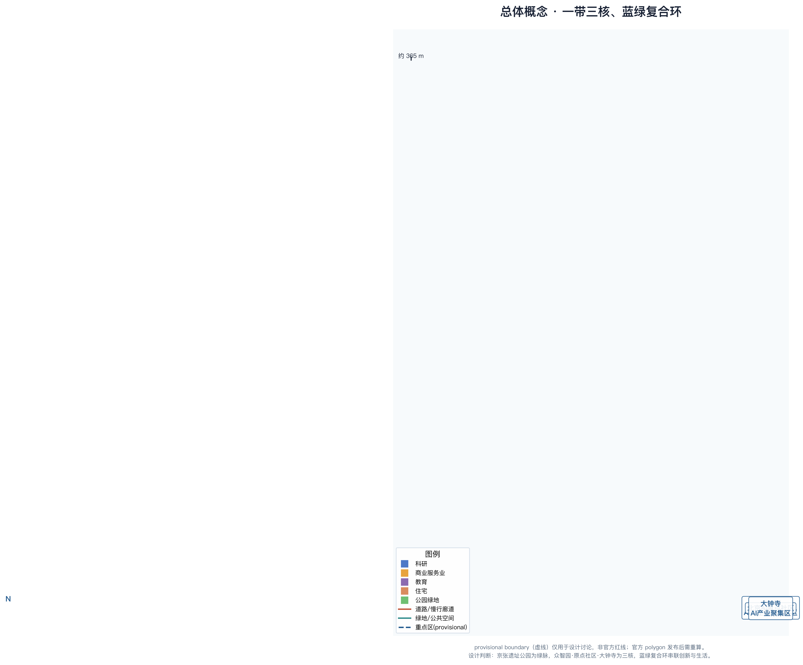
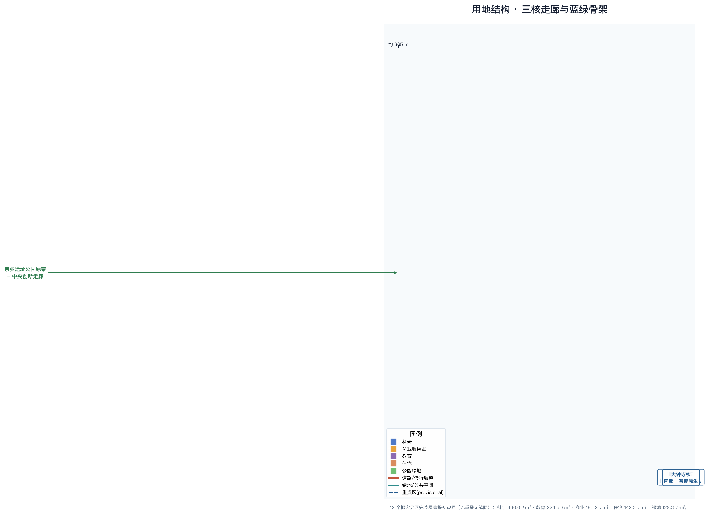
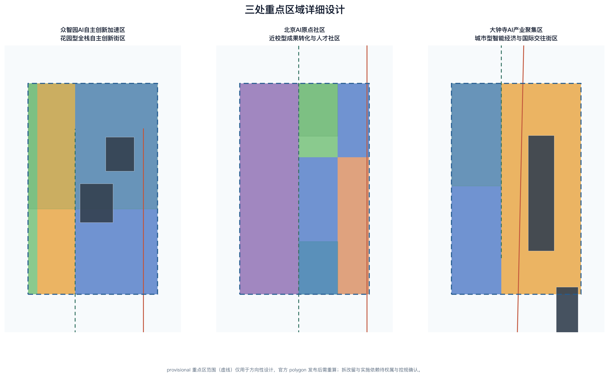
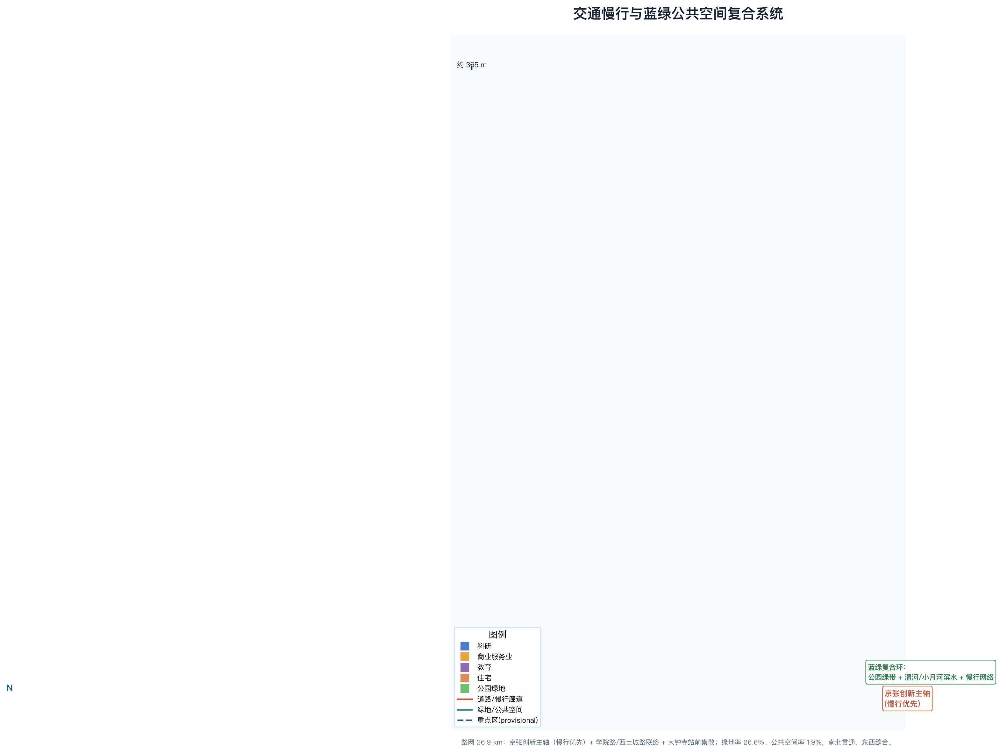
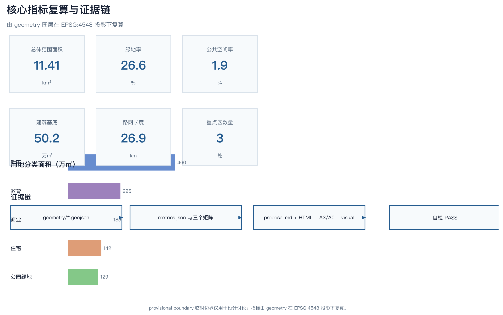

Jing-Zhang AI Synapse Belt — Centennial Jing-Zhang AI Innovation Belt Concept Design
Taking the Jing-Zhang Heritage Park as the green spine and the three key areas as innovation cores, the proposal puts forward an “One Belt, Three Cores, Blue-Green Composite Loop” concept urban design: the northern Zhongzhiyuan builds AI full-stack self-reliant innovation and governance voice, the central Origin Community cultivates a world-class AI innovation ecosystem, the southern Dazhongsi develops AI-native new business forms, and a Zhongguancun technology-service wing plus a Xiaoyue River scenario-empowerment wing form a collaborative loop.
Jing-Zhang AI Synapse Belt — Centennial Jing-Zhang AI Innovation Belt Concept Design
Design Basis and Source Inventory
This proposal takes the Centennial Jing-Zhang AI Innovation Belt International Urban Design Open Call — Prequalification Announcement published by the Haidian Branch of the Beijing Municipal Commission of Planning and Natural Resources, together with its annexes, as its primary basis, and uses the design brief, the Agent open-call taskbook, enumerations, planning-limit ranges, and source inventory registered under brief/site-package/ in the repository as its machine-readable basis. Before generation, we read design_brief.json, allowed_design_space.json, sources.json, enums/, ranges/, schemas/ and data/source_registry.json, and used data/processed/agent_fact_pack.md, project_scope_summary.csv, agent_task_requirements.csv, source_use_matrix.csv, and missing_data_checklist.csv to build task, scope, source-use, and data-gap checklists 来源 来源 来源 , as recorded in the structured files 深度. Every design judgment is organized along four layers — traceable source, reproducible metric, verifiable layer, and human-reviewable assumption — and the complete machine indexes are stored respectively in sources.json, metrics.json, standard_matrix.json, and design_depth_matrix.json rather than being repeated as machine identifiers in the prose.
The permitted-use boundaries of the source registry are set by data/source_registry.json 来源: the registered summary is 7 formal-ready sources, 1 background-only source, and 1 provisional-only source. The prequalification announcement and the Agent open-call taskbook are cleared public task materials; until the official SITE_BOUNDARY and the three KEY_AREA polygons are released, the spatial geometry uses only the explicitly marked provisional_constraint temporary scope in brief/site-package/geometry/provisional_boundaries.geojson. The proposal never upgrades background-only or provisional-only material into official boundaries, statutory regulatory controls, formal scoring evidence, or government implementation commitments.
In this package, geometry/site_boundary.geojson and geometry/key_areas.geojson are both provisional_constraint with official_boundary=false; they may be used only for proposal generation, self-check, visualization, and design discussion, and may not serve as an official redline, approval basis, precise-area basis, or statutory control conclusion. This organizer data gap does not by itself block content scoring; once official polygons are published, the site boundary, key areas, land use, roads, green space, public space, buildings, phasing, and all area-type metrics must be recalculated 空间数据 指标 来源. In the prose, spatial structures, scenarios, projects, and metrics are all written on the principle “discussable, reviewable, and recalculable after the official boundary is substituted.”

Three-Level Scope Framework
The proposal organizes work into the three levels fixed by the announcement: the coordinated research area focuses on the AI industry ecosystem, strategic positioning, innovation chain, and future-city form of the 43.6 km² band along the Jing-Zhang corridor (bounded by the North Fifth Ring Road to the north, Jingzang Expressway to the east, Xizhimen Outer Street to the south, and Wanquanhe Road to the west); the overall design area focuses on the 11.4 km² urban and industrial region within 1-2 km around the Jing-Zhang Heritage Park, requiring an overall urban-renewal framework, industrial spatial layout, transport and municipal support, and urban-character control; and the key detailed-design area focuses on 368.4 ha across three detailed-design districts, requiring functional use, building scale, retain/renovate/demolish/new-build classification, public-space connectivity, and transport organization 来源 深度. The three levels are mapped one-to-one in compliance_matrix.json, ensuring that the mandatory tasks of announcement clauses 1.3, 1.4, and 1.5 and of agent.1-agent.6 all have chapter, layer, metric, drawing, and HTML evidence.
The overall design area uses a provisional substitute boundary with a recomputed area of 11,412,825 m², consistent with the announced textual area of about 11.4 km²; this rough polygon is about 1.37 km wide and 9.72 km long north-south, a belt-shaped region stretching along the Jing-Zhang railway corridor 空间数据 指标. This belt shape determines the spatial-organization logic of “one belt running through, three cores in series, east-west stitching, north-south connection.” The three key areas are cross-checked with a dedicated layer and a count metric 空间数据 空间数据 空间数据 , as recorded in the structured files 指标.
The three levels are not disconnected sheets. The coordinated research area decides the industry-chain and city-form judgment, the overall design area turns the judgment into renewal projects, spatial structure, and facility capacity, and the key-area detailed design verifies the implementability of specific parcels, buildings, transport, public space, and AI application scenarios 深度 深度. During generation the proposal first locks the provisional boundary and constraints adopted by this submission, then generates land use, buildings, roads, green space, public space, phasing, and AI service nodes, then recomputes metrics from these layers and explains in prose which conclusions remain limited by the provisional boundary; any area, ratio, scale, or project count that cannot be recomputed from structured data is not written into formal conclusions.
| Level | Design question | Proposal answer | Data anchor |
|---|---|---|---|
| Coordinated research area | How are the AI industry ecosystem and future-city form organized | Build an innovation chain of “university origination – open-source collaboration – enterprise incubation – public experience – international outreach” forming a three-areas/two-wings loop | compliance_matrix.json、standard_matrix.json |
| Overall design area | How are industrial space, urban renewal, transport/municipal, and character mapped | Organize land use, buildings, roads, green space, public space, and phasing layers with an “One Belt, Three Cores, Blue-Green Composite Loop” structure | 空间数据、空间数据 |
| Key detailed-design area | How do the three districts reach detailed-design depth | Propose positioning, spatial moves, AI scenarios, and implementation dependencies for each | 空间数据、空间数据、空间数据 |

Coordinated Research Area — Industry and Future-City Study
Overall Concept, Naming, and Visual-Identity Direction
For Agent task agent.1, the proposal adopts “Jing-Zhang AI Synapse Belt” (JZ-ASB) as the belt’s creative main name, continuing and strengthening the recognition of the official “Centennial Jing-Zhang AI Innovation Belt”: the railway is the “vein,” the three innovation nodes are the “synapses,” and the historical transport corridor is reinterpreted as the neural-circuit image of contemporary AI knowledge flow 来源 标准 深度. This name is not a statutory name replacing the official one but a conceptual brand direction for the open call, to be deepened by professional teams.
The naming system has three levels: level one, “Jing-Zhang AI Synapse Belt,” serves as the regional brand and public narrative; level two is the “three cores” sub-brands (Zhongzhiyuan “full-stack innovation core,” Origin Community “open-source origination core,” and Dazhongsi “AI-native core”); level three is the scenario-and-event names (such as “Global AI Activity Week” and “Open-Source Lighthouse Night”). The logo direction uses “one rail, three synapses, blue-green twin veins” as its graphic motif: a continuous rail curve running south-north (suggesting a “Z”), three AI synapse nodes along the rail, and blue-green twin veins extending from the two ends, corresponding to the Jing-Zhang railway history, Zhongguancun innovation, and the blue-green composite loop. The palette uses Jing-Zhang railway ochre-brown (history), Zhongguancun technology blue (innovation), and AI cyan-green (future); the typeface is a geometric sans-serif used bilingually in Chinese and English. This visual system shares one “vein-core-loop” graphic language with signage, honor display, and event branding, so that the cultural identity system is not confused with the belt-level overall logo 深度.
The three positionings translate the official wording into designable spatial strategies 来源 标准: the Centennial Jing-Zhang Cultural Belt answers “where we come from,” anchored in the railway remains and the Qinghuayuan Railway Station; the Urban AI Lifestyle Experience Belt answers “for whom we build,” using AI+ transport, public services, consumption, and community life as everyday scenarios; and the AI Integration Innovation Belt answers “where we are going,” with full-stack self-reliant innovation, the open-source ecosystem, and AI-native new business forms as the industrial mainline. The five functions are further implemented as spatial zones: the AI full-stack self-reliant innovation system (Zhongzhiyuan), the world-class AI innovation ecosystem (Origin Community), the AI+ scenario-empowerment paradigm (Xiaoyue River scenario-empowerment wing), the intelligent vital AI city (blue-green composite loop and public space), and global AI-governance voice (standards, safety governance, and pilgrimage landmark system).
The three-areas/two-wings collaborative loop organizes the five spatial units into an operable whole 来源: the northern Zhongzhiyuan carries the full-stack self-reliant innovation system and global AI-governance voice, the central Origin Community cultivates a world-class AI innovation ecosystem, and the southern Dazhongsi develops AI-native new business forms; the Zhongguancun technology-service wing provides global factor allocation, IP, and capital enablement, while the Xiaoyue River scenario-empowerment wing places AI scenarios into public experience and urban life. The two “wings” are not independent incremental parcels but the mechanism layer connecting northern R&D, central origination, southern new business forms, and university, capital, and scenario resources, physically carried by the university research zone, scenario service belt, and blue-green public space 空间数据 空间数据.
World-Class AI Innovation Ecosystem and Global Cases
For Agent task agent.2, the proposal presents an AI innovation ecosystem map and 8 global cases as comparative references for spatial, operational, and scenario mechanisms, without constituting any investment-promotion commitment to any company, city, or park 来源 标准 深度. The cases are used only to illustrate how the “university origination – open-source collaboration – enterprise incubation – public experience – international outreach” chain and the “land-space-industry-capital-talent-compute-data-scenario” factor mechanisms can be localized; unverified investment, output, or policy figures are not cited.
| Case | Innovation-mechanism summary | Transferable spatial/operational mechanism | Evidence |
|---|---|---|---|
| Palo Alto, Silicon Valley, USA | Full-chain university-incubator-VC-enterprise clustering with highly mixed living and innovation | Origin-community campus-origination street, open innovation units | 深度 |
| South Lake Union, Seattle, USA | Cloud/AI enterprise headquarters drive surrounding R&D, talent, and public-space renewal | Zhongzhiyuan full-stack innovation zone, enterprise-led urban renewal | 空间数据 |
| Kendall Square, Boston, USA | Life-science and AI crossover with lab-incubation-talent community clustering | University research and incubation zone, result-transfer station | 空间数据 |
| King’s Cross, London, UK | Railway-heritage renewal into an innovation business district keeping historic station halls as public living rooms | Jing-Zhang Heritage Park green belt, historic station publicization | 空间数据 |
| Jurong Lake District, Singapore | Plan-first smart district and sustainable neighborhoods advanced together | Qinghe waterfront low-carbon eco corridor, blue-green compound | 空间数据 |
| Shinagawa/Shibuya station-city, Tokyo, Japan | Rail-station-led vertical cities and innovation-office clustering | Dazhongsi station-front integration, four-quadrant pedestrian connectivity | 空间数据 |
| Nanshan Science Park, Shenzhen, China | Hard-tech and intelligent-hardware clustering with close industry-city integration | Southern industry-city integration innovation zone | 空间数据 |
| Zhongguancun, Beijing, China | University origination with accumulated science-service and open-innovation culture | Zhongguancun technology-service wing, Origin-community open-source ecosystem | 空间数据 |
The future-city-form study answers how artificial intelligence changes work, life, socializing, learning, transport, and public services 深度 深度. The proposal places AI transport systems, continuous green space, innovation service facilities, and an international living-working atmosphere into locatable functional zones, nodes, corridors, and scenarios rather than describing technological visions in general terms. Industry-strategy metrics, the AI innovation index, talent density, space-supply types, and AI+ vertical application key areas are written into metrics.json and compliance_matrix.json, distinguishing official values, design-suggestion values, and values pending official data calibration; global AI innovation events, developer communities, open scenarios, or pilgrimage routes are all framed as conceptual suggestions or reference schemes, not as confirmed government activities or implementation arrangements 来源 深度.
Overall Design Area — Urban Renewal and Regulatory-Plan-Depth Urban Design
The overall design area must reach the urban-design depth of a regulatory detailed plan 标准 深度. The proposal adopts “One Belt, Three Cores, Blue-Green Composite Loop” as the overall spatial structure: along the Jing-Zhang railway corridor in the center it places the “Jing-Zhang Heritage Park green belt + central innovation corridor,” stringing together the three innovation cores of northern Zhongzhiyuan, central Origin Community, and southern Dazhongsi; on the east and west sides it arranges the university research zone, industry-city integration zone, talent housing zone, and waterfront ecological corridor, forming a multi-loop composite slow-mobility and blue-green network 空间数据 空间数据 空间数据 , as recorded in the structured files 深度.
The land-use plan completely divides the submitted boundary into 12 conceptual zones covering all 11,412,825 m² with neither overlap nor gaps: commercial and service land 1,851,779 m², research land 4,600,027 m², and education land 2,245,203 m² 空间数据 指标 指标. Housing land of 1,422,968 m² and park green land of 1,292,890 m² together complete the functional mix 指标 指标 标准 , as recorded in the structured files 深度. The zones are organized under the public standard for national land-use investigation, planning, and use-control classification: research and education land carries the “full-stack self-reliant innovation – university origination – result transfer” chain, commercial land focuses on Dazhongsi and the Xiaoyue River scenarios, housing land surrounds the Origin Community and southern supporting areas, and green land forms the blue-green skeleton along the Jing-Zhang Heritage Park, the Qinghe, and the Xiaoyue River.
Urban renewal follows the principle “retain history, retrofit the inefficient, renew the interface, and anchor the new”; it identifies inefficient industrial space, aging blocks, and redundant space along the rail corridor as renewal targets, and forms a phasing framework of near-term pilot, mid-term renewal, and long-term governance 深度 深度 深度. Matters concerning building height, development intensity, FAR, road redlines, setbacks, and facility standards are all phrased as “pending official regulatory-plan confirmation” until official regulatory conditions are obtained; agent-inferred values are never presented as approved indicators 标准 深度 深度.
The phasing scope is expressed by geometry/phasing.geojson: phase one focuses on the three cores and the green-belt skeleton, phase two advances the central innovation corridor and the Origin Community, and phase three completes the northern Zhongzhiyuan and the Qinghe ecological interface 空间数据 空间数据 空间数据.
Key-Area Detailed Design
Key-area detailed design is mandatory; all three districts must reach the urban-design depth of a consolidated planning-implementation scheme 深度. The three key areas are expressed as provisional constraints in geometry/key_areas.geojson (official polygons missing), with the announced textual areas: Zhongzhiyuan 192.1 ha, Origin Community 104.3 ha, and Dazhongsi 72.0 ha 空间数据 空间数据 空间数据 , as recorded in the structured files 指标. The positioning, spatial moves, building form, retain/renovate/demolish classification, public-space connectivity, transport organization, AI scenarios, and implementation risks below are all directional designs for professional teams to deepen.
Zhongzhiyuan AI Self-Reliant Innovation Acceleration Area (north, about 192.1 ha) is positioned as a “garden-type full-stack self-reliant innovation block.” Around the national AI platform, full-stack self-reliant innovation, standard setting, safety governance, industrial display, external transport, Qinghe culture, and low-carbon green innovation exchange, it proposes spatial moves: organizing a low-carbon ecological corridor and an innovation-exchange plaza along the Qinghe interface, arranging AI R&D demonstration buildings and full-stack innovation accelerator towers in the middle, and building a display-and-collaboration chain of “self-reliant model testing – standard-governance display – safety-governance sandbox – low-carbon compute experience” 空间数据 空间数据 空间数据. Transport connects the North Fifth Ring Road and external channels via the Qinghe waterfront connector and the Jing-Zhang innovation spine 空间数据 空间数据.
Beijing AI Origin Community (central, about 104.3 ha) is positioned as a “campus-adjacent result-transfer and talent community,” serving university origination, open-source collaboration, result release, and a talent special zone: the innovation-incubation core and talent housing organize “campus-park-block” slow-mobility stitching, with open-source incubators, result-transfer stations, and a public living room, forming a compound scenario of open-source release, result display, talent services, residential life, and rail-station integration 空间数据 空间数据 空间数据 , as recorded in the structured files 空间数据. The campus-adjacent result-transfer street is supported on the west by the university research and incubation zone 空间数据.
Dazhongsi AI Industry Cluster (south, about 72.0 ha) is positioned as an “urban-type intelligent-economy and international-exchange block.” Around leading enterprises, agents, intelligent terminals, content consumption, data elements, digital assets, commercial services, and Dazhongsi Station integration, it organizes a station-front innovation plaza, four-quadrant pedestrian connectivity, and public-environment renewal around key enterprises in the AI-native commercial business district, and arranges AI-native business buildings and AI industry-service buildings, forming an urban interface of “agent and intelligent-terminal display – content consumption – data elements – international roadshow” 空间数据 空间数据 空间数据 , as recorded in the structured files 空间数据. The station-front distribution road and the Jing-Zhang innovation spine provide external transport organization 空间数据.
| Key district | Design positioning | Spatial moves | AI industry and operation scenarios | Evidence |
|---|---|---|---|---|
| Zhongzhiyuan AI Self-Reliant Innovation Acceleration Area | Garden-type full-stack self-reliant innovation block | Qinghe ecological interface, innovation-exchange plaza, R&D building cluster, standard-governance display | Self-reliant model testing, standard-setting workshop, safety-governance sandbox, low-carbon compute experience | 空间数据、深度 |
| Beijing AI Origin Community | Campus-adjacent result-transfer and talent community | Campus-park-block slow-mobility stitching, open-source incubation, result-transfer station, talent housing | Open-source release hall, result release, talent-zone services, campus-adjacent incubation | 空间数据、来源 |
| Dazhongsi AI Industry Cluster | Urban-type intelligent-economy and international-exchange block | Station-front integration, four-quadrant pedestrian connectivity, AI-native commercial renewal, key-enterprise public interface | Agent and intelligent-terminal display, content consumption, data elements, and international roadshow | 空间数据、指标 |

AI Innovation Ecosystem, Talent Personas, and AI+ Scenarios
The proposal builds six user personas for AI talent, enterprises, and public governance, covering R&D offices, open-source collaboration, result release, enterprise services, talent housing, social learning, consumption, sports and leisure, and international exchange 来源 深度. Each persona states typical needs, spatial responses, and self-check boundaries, ensuring that AI scenarios do not collect individual behavioral traces, do not output unauthorized personal profiles, and keep a human-review step.
| Persona | Typical needs | Spatial response | Self-check boundary |
|---|---|---|---|
| Open-source developer | Release, collaborate, test, community reputation | Origin-community open-source release hall, public code wall, night collaboration space | No personal behavioral trace collection; event data aggregated only |
| Startup team | Low-cost office, compute access, product test ground | Zhongzhiyuan shared test ground, edge-compute service point, standard-governance consultation | Compute and data services require separate authorization |
| Enterprise visitor | Display, business, international reception, recruiting | Dazhongsi international roadshow living room, station transfer, public space around key enterprises | Enterprise marks and cases must be cleared |
| Surrounding resident | Commute, leisure, community services, low-disturbance renewal | Jing-Zhang Heritage Park slow-mobility loop, embedded community services, graded night lighting and activities | Resident profiles not used for commercial recommendation |
| University faculty and students | Result transfer, cross-campus collaboration, daily walking | Campus-park slow-mobility stitching, result-transfer station, AI education experience point | Campus data and research outputs require authorization |
| International developer and visitor | International exchange, open community, city experience | Dazhongsi international roadshow living room, Global AI Activity Week route, bilingual signage | Cross-border personal data and display require compliance review |
The proposal provides 12 AI scenario cards, of which 4 are industrial test-and-validation scenarios (safety-governance sandbox, open-source model test ground, data-element compliance test, and AI transport test scenario), meeting the requirement of no fewer than 10 scenario cards and no fewer than 3 industrial test-and-validation scenarios 来源 标准 深度. Every card maps to a spatial location, target users, operating data, privacy boundary, human review, operating entity, and visualization layer; the table below lists the carriers and design descriptions of the 12 cards, and the privacy, review, and operation boundaries are stated uniformly after the table.
| Scenario card | Spatial carrier | Design description |
|---|---|---|
| 01 Open-source release hall | Origin Community innovation-incubation core | Release, code-contribution display, and small roadshow space for universities, open-source communities, and startups |
| 02 Safety-governance sandbox (test) | Zhongzhiyuan full-stack innovation zone | Translate standard setting, safety evaluation, and model red-team testing into visitable, bookable, auditable display and collaboration nodes |
| 03 Open-source model test ground (test) | Zhongzhiyuan shared test zone | Provide open, auditable benchmark testing, energy, and safety evaluation interfaces for open-source models |
| 04 Data-element compliance test (test) | Dazhongsi data-element living room | Test-and-demonstrate data-element and digital-asset circulation with compliance, authorization, and auditability as preconditions |
| 05 AI transport test scenario (test) | Jing-Zhang innovation spine and intersections | Use low-intrusion sensing and explainable guidance to test slow-mobility gap detection, congestion prediction, and accessibility needs |
| 06 Edge-compute service station | Nodes across the overall design area | Combine with public services, enterprise services, and low-carbon energy as a prototype for new infrastructure to be deepened |
| 07 AI slow-mobility navigation | Jing-Zhang Heritage Park vitality belt | Use explainable guidance and low-intrusion sensing to identify slow-mobility gaps, congestion nodes, and accessibility needs |
| 08 Dazhongsi international roadshow living room | Dazhongsi AI-native commercial district | Serve display, negotiation, media release, and international exchange for agents, intelligent terminals, and content-consumption enterprises |
| 09 Qinghe low-carbon innovation corridor | Zhongzhiyuan Qinghe interface | Combine green space, stormwater, walking/cycling, and AI display as the park’s public living room |
| 10 Campus-adjacent result-transfer street | Between Origin Community and university research zone | Organize incubation, display, legal, IP, and financing services for university result transfer |
| 11 AI life-service model street | Community-commercial junction | Place AI+ medical, education, legal, and life-service scenarios into operable small-scale block space |
| 12 Global AI Activity Week route | Belt public-space system | Form a walkable, shareable experience route from heritage culture, open-source community, industry display, to international roadshow |
AI-governance recommendations follow the principles of data minimization, public sources, explainability, and human review 来源 深度. City agents may assist in identifying slow-mobility gaps, public-space heat, facility maintenance, enterprise-service demand, and event-safety risks, but must not replace planning approval, must not output unauthorized personal profiles, and must not claim official implementation commitments. All AI scenario nodes enter the structured layers or the compliance matrix so reviewers can see their relationship with industry, space, and the public interest 空间数据 空间数据 空间数据 , as recorded in the structured files 指标.
Land Use, Building Scale, and Retain/Renovate/Demolish Plan
The land-use plan fully covers the submitted boundary with neither overlap nor gaps; the 12 conceptual zones correspond one-to-one to the “One Belt, Three Cores, Blue-Green Composite Loop” structure: research land (0802) totals 4,600,027 m², covering the Zhongzhiyuan full-stack innovation zone, Origin innovation core, central innovation corridor, and southern industry-city integration zone; commercial and service land (05) totals 1,851,779 m², covering the Dazhongsi AI-native commercial business district and the Xiaoyue River scenario-empowerment service belt 空间数据 空间数据 指标 , as recorded in the structured files 指标.
Education land (0804) of 2,245,203 m² covers the university research and incubation zone; housing land (0701) of 1,422,968 m² covers the Origin-community talent housing and the southern talent-housing community; and park green land (1401) of 1,292,890 m² forms the green vein along the Jing-Zhang Heritage Park and the Qinghe 指标 指标 指标 , as recorded in the structured files 标准 , as recorded in the structured files 深度.
The building plan uses representative parcels to express renewal-and-new-build logic, with 7 building footprints and a recomputed total area of 501,558 m², corresponding to the Zhongzhiyuan R&D demonstration and full-stack acceleration, Origin-community open-source incubation and result transfer, Dazhongsi AI-native business and industry services, and the university research laboratory cluster 空间数据 空间数据 指标. These footprints are directional concepts; they represent no confirmed retain/renovate/demolish conclusion and no commitment to total building scale, FAR, or density. Where existing buildings, ownership, regulatory plans, and engineering conditions are missing, the proposal only presents a “retain-retrofit-renew-new-pending” classification method and a to-be-calibrated list, without inventing parcel-level retain/renovate/demolish conclusions 深度 深度.
The retain/renovate/demolish classification suggestion (conceptual): railway remains, historic station halls, and cultural landmarks are mainly retained and activated; inefficient industrial space and aging blocks are mainly retrofitted and renewed; redundant space around rail stations is mainly integrated and built anew; the rest follows “retain the base + implant AI scenarios” 深度 空间数据. Building-scale and intensity metrics stay consistent with metrics.json; where official conditions are missing, total building scale, FAR, building height, building density, green ratio, setbacks, and building control lines are listed as unknown or pending_control rather than fixed numbers that fabricate precision 指标 深度 深度.
Transport, Rail, Municipal, and Public-Service Facilities
The transport plan responds to the announcement’s requirements on rail-station integration, road microcirculation, slow-mobility gaps, external transport, parking, non-motorized parking, and green transport systems, focusing on the North Fifth Ring Road, the Jing-Zhang Heritage Park crossing-node, Wudaokou, Qinghuadonglu West, Dazhongsi Station, and transport links around key enterprises 深度. geometry/roads.geojson expresses a network of the Jing-Zhang innovation spine (slow-mobility-priority corridor), the Xueyuan Road science-innovation-corridor connector, the Xitucheng Road slow-mobility connector, the Zhongzhiyuan Qinghe waterfront connector, and the Dazhongsi station-front distribution road, with a recomputed length of 26,895 m 空间数据 空间数据 指标. The road and slow-mobility layers stay within the submitted boundary and are cross-checked with public space, green space, industrial nodes, and key districts; road redlines and engineering alignments are phrased as “pending official regulatory-plan and engineering conditions,” never as approved conditions 深度 深度.
Municipal and public-service facilities cover AI industry-service facilities, innovation-service platforms, talent life-service facilities, new infrastructure, distributed energy, edge computing, and the integration of conventional municipal facilities 深度. Edge-compute stations, distributed energy, and public-service nodes are arranged along the Jing-Zhang innovation spine and the Xiaoyue River scenario-empowerment belt as new-infrastructure prototypes to be deepened; where pipeline, energy, drainage, flood-control, and fire-protection engineering data are missing, they are listed as preconditions for formal deepening 空间数据 深度. Rail-station protection scope is expressed as a constraint layer (Dazhongsi Station as a conceptual scope), and four-quadrant pedestrian connectivity is supported by public-space nodes 空间数据 空间数据.

Blue-Green Space, Public Space, and Urban Character
The blue-green plan takes the Jing-Zhang Heritage Park vitality belt as its skeleton and coordinates Qinghe, Xiaoyue River, and the travel needs of surrounding universities, enterprises, and communities, proposing a north-south-through, east-west-connected network of footpaths, cycleways, and green space 深度. geometry/green_space.geojson recomputes a green-space area of 3,036,787 m² and a green ratio of 26.61%; geometry/public_space.geojson recomputes a public-space area of 219,099 m² and a public-space ratio of 1.92%, together supporting talent living and innovation exchange 空间数据 空间数据 指标 , as recorded in the structured files 指标. The Qinghe waterfront low-carbon ecological corridor and the Xiaoyue River waterfront scenario green belt compound blue-green space with industry, scenarios, and public experience, forming the “blue-green composite loop” 空间数据 空间数据 深度.
For Agent task agent.4, the proposal presents no fewer than 3 AI pilgrimage landmarks and an honor-display system 来源 标准 深度:
- “Gate of Rails” at the north end of the Jing-Zhang remains: reinterpret the northern terminus of the Jing-Zhang railway remains as a public landmark recording the three-stage narrative of centennial Jing-Zhang, Zhongguancun, and AI new culture, integrated with the Qinghe interface;
- “Open-Source Lighthouse” in the Origin Community: the spatial anchor for the open-source release hall and developer-contribution memory, publishing open-source pride and contributor narratives;
- “AI-Native Living Room” at Dazhongsi Station: combine the rail station with AI-native commerce into a public-facing international-exchange and consumption landmark;
- “Full-Stack Innovation Ring” in Zhongzhiyuan: with standard-governance display and the safety-governance sandbox as content, forming an industry-facing innovation pilgrimage and education node.
The honor-display system is consistent with the “memorable contribution” principle and includes an open-source contributor star wall, an annual AI innovation index release podium, and a developer-community honor roster, reusing the “vein-core-loop” graphic language so that contributor names, proposal records, and knowledge assets can be preserved sustainably 来源 深度. All landmarks, signage, logos, typefaces, images, portraits, and enterprise marks must have cleared sources; conceptual landmarks must not be written as approved construction nor over-entertained, internet-famous, or vulgarized 深度.
For Agent task agent.5, the cultural narrative unfolds in three acts: “Jing-Zhang Railway – Zhongguancun – AI New Culture” 来源 标准: the first act looks back at the Jing-Zhang railway’s origin of “Chinese self-reliant innovation” (Qinghuayuan Railway Station, Zhan Tianyou spirit); the second carries on Zhongguancun’s “technology innovation origination” tradition; the third opens AI new culture of “human-machine collaboration, open-source co-creation, and public wellbeing.” The spatial cultural system takes heritage parks, historic station halls, and cultural landmarks as the “historical vein,” technology blue, railway ochre, and AI cyan-green as the “color vein,” and bilingual signage, public art, and event symbols as the “cultural vein,” forming a perceivable urban character and international communication narrative. The signage and identity-system direction is distinguished from the belt-level overall logo system, used only for spatial cultural expression, and does not confuse the cultural identity system with the regional brand 深度.
Renewal Project List, Implementation Policy, and Phasing Plan
The implementation plan forms an auditable renewal project list stating location, type, function, responsible entity, dependency conditions, implementation stage, risks, and evaluation metrics 深度 深度. geometry/phasing.geojson expresses the three-phase scope, and compliance_matrix.json links every task to phasing and drawings; content without ownership, funding, implementing entity, or approval pathway is written as implementation risk rather than a commitment to delivery 空间数据 深度.
| Project ID | Project name | Type | Key dependencies | Evidence |
|---|---|---|---|---|
| JZ-01 | Jing-Zhang Heritage Park slow-mobility gap stitching | Public space/transport | Road redlines, under-bridge space, transport-organization review | 空间数据 |
| JZ-02 | Zhongzhiyuan Qinghe innovation interface | Blue-green space/industry display | River blue line, ecology, and flood-control conditions | 空间数据 |
| JZ-03 | Origin-community campus-adjacent result-transfer street | Urban renewal/industry services | Campus boundary, ownership, ground-floor use | 空间数据 |
| JZ-04 | Dazhongsi station four-quadrant pedestrian connectivity | Rail integration/slow mobility | Rail station, road intersections, municipal pipelines | 空间数据 |
| JZ-05 | AI public-service and edge-compute node | New infrastructure/public services | Energy, compute, safety, operating entity | 空间数据 |
| JZ-06 | Global AI Activity Week public route | Operation/brand | Public-space permit, event safety, copyright clearance | 空间数据 |
Phasing is distinguished from the 100-day open-call design cycle: the call cycle is the time requirement for submitting deliverables, while implementation phasing is the pathway for urban renewal and project construction 深度. Phase one (near-term pilot) starts with lightweight facilities, operating activities, and service platforms on the three cores and the green-belt skeleton; phase two (mid-term renewal) advances the central innovation corridor and the Origin Community and improves rail integration and public services; phase three (long-term governance) completes the northern Zhongzhiyuan, the Qinghe ecological interface, and the international operation system 空间数据 空间数据 空间数据 , as recorded in the structured files 深度.
For Agent task agent.6, the long-term operation system includes: an annual event system (Global AI Activity Week, Open-Source Lighthouse Night, developer conference, scenario open day); an event brand and communication visual system (reusing the “vein-core-loop” graphic language); a developer-community operation mechanism (contribution wall, honor roster, open-source project incubation); an AI scenario open-operation mechanism (scenario-card opening, data-governance sandbox booking, human-review process); public-experience and city-landmark operation; and international outreach and attraction-conversion mechanisms (roadshow living room, bilingual signage, global developer network) 来源 标准. All events, attraction, funding, policy, and operation arrangements are framed as conceptual suggestions or deepening directions, not as confirmed government arrangements; where talent, enterprise, and developer conversion pathways are missing, the risk is stated honestly 深度.
Indicator System, Area Recalculation, and Compliance Matrix
The indicator system is divided into three categories 深度: the first category is spatial metrics directly recomputed from the submitted geometry, such as overall-scope area, green ratio, public-space ratio, building footprint area, road-network length, key-area count, and land-use-by-code area 指标 指标 指标; the second category is control metrics that need official regulatory plans or brief annexes, such as FAR, building height, building density, setbacks, road redlines, and facility standards, currently listed as unknown or pending_control 指标; the third category is performance metrics needing ongoing calibration with operation or industry data, such as the AI innovation index, talent density, industry-service satisfaction, slow-mobility accessibility, event participation, and scenario usage frequency. The three categories enter metrics.json, assumptions.json, and compliance_matrix.json respectively, avoiding writing operational visions as approved planning conditions.
The design meaning of the core metrics is as follows: the overall-scope area of 11,412,825 m² constrains spatial allocation and functional mix; the green ratio of 26.61% supports talent living and low-carbon innovation exchange; the public-space ratio of 1.92% supports innovation-exchange and public-experience nodes; the building footprint of 501,558 m² responds to industrial-space supply; the 26,895 m road network supports slow-mobility priority and rail transfer; and the three key areas carry detailed-design depth 空间数据 指标 指标 , as recorded in the structured files 指标 , as recorded in the structured files 指标 , as recorded in the structured files 深度. All known metrics can be recomputed from GeoJSON or credible sources, and unknown metrics all give the reason and formal-submission preconditions; the results of scripts/spatial_review.py and scripts/visual_review.py are important evidence for the formal self-check.
The compliance matrix is the master document of task responsiveness: every announcement task and every agent.1-agent.6 task corresponds to a report chapter, layer, metric, drawing, HTML page, source, assumption, and self-check item, covering all mandatory tasks of announcement clauses 1.3, 1.4, 1.5 and of agent_taskbook.json 来源 标准. A proposal that fails to cover any mandatory task may not enter formal professional scoring; this proposal actually elaborates the six tasks of naming/logo, ecosystem cases, scenario cards, pilgrimage landmarks, cultural narrative, and long-term operation in the prose, rather than merely checking boxes in the compliance matrix.

Risk, Copyright, and Compliance Statement
Bilingual requirement. The primary proposal is in Chinese, with a complete equivalent counterpart proposal.en.md; the A3 booklet, A0 boards, readable HTML report, and text-bearing figures all provide English counterparts, preferentially using the recommended translations in docs/terminology-glossary.md 深度. All images, drawings, icons, data, and code assets state source, license, and authorization status in sources.json or report/copyright_statement.md; HTML pages do not load remote scripts, remote map tiles, remote fonts, iframes, forms, or external APIs, and do not track reviewer behavior.
The risk and missing-data list is cross-checked by the risk depth item, the constraint layer, and the site package 深度 空间数据 来源: the official-boundary, key-area, regulatory-plan, road, parcel, building, municipal, heritage, and public-service gaps enter assumptions.json, the self-check, and the prose risk chapter. Any conclusion lacking official regulatory plans, road redlines, ownership, municipal, fire-protection, or heritage conditions is downgraded to a pending-confirmation item. This proposal claims no official approval, approved regulatory plan, final land ownership, final construction scale, or guaranteed implementation; the AI agent is responsible for facts, sources, copyright, spatial data, metrics, and expression, and maintainers and professional reviewers may request rework or rejection based on self-check results, spatial review, and the compliance matrix.
References
- brief/public-brief.md (prequalification announcement and taskbook excerpts)
- brief/site-package/design_brief.json (design brief: three-level scope, three key areas, coordinate policy)
- brief/site-package/agent_taskbook.json (Agent open-call taskbook: three positionings, five functions, three areas and two wings, agent.1-agent.6)
- brief/site-package/allowed_design_space.json (allowed design space and boundaries)
- brief/site-package/ranges/planning_limits.json (official areas and planning-control ranges)
- brief/site-package/standards/standards.json and references/ (professional standards and reference snapshots)
- data/processed/agent_fact_pack.md (reading-guide layer and fact pack)
- data/source_registry.json (public-source permitted-use registry)
- The complete machine indexes are in
sources.json,metrics.json,compliance_matrix.json,standard_matrix.json, anddesign_depth_matrix.json来源